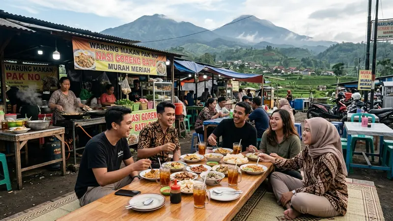

Biaya wisata baru Batu 2026 dipengaruhi oleh harga tiket destinasi, biaya penginapan, dan waktu kunjungan, dengan tiket masuk destinasi baru umumnya berkisar puluhan ribu rupiah per orang.
- Harga tiket destinasi baru di Batu 2026 relatif terjangkau dibanding wahana besar sejenis di kota lain.
- Biaya penginapan dapat meningkat signifikan saat musim libur panjang.
- Okupansi hotel di Kota Batu bisa mencapai tingkat tinggi pada akhir pekan musim ramai.
- Memilih waktu kunjungan yang tepat dapat menekan biaya secara keseluruhan.
- Merencanakan rute dan jumlah destinasi membantu mengendalikan anggaran liburan.
Berapa Perkiraan Biaya Kunjungan ke Wisata Baru Batu 2026?
Perkiraan biaya kunjungan ke wisata baru Batu 2026 untuk tiket masuk destinasi baru berkisar sekitar Rp45.000 hingga Rp95.000 per orang, belum termasuk biaya transportasi dan penginapan.
Sebagai contoh, Mikutopia menawarkan tiket reguler sekitar Rp45.000 dan tiket terusan dengan akses ke sekitar 20 wahana sekitar Rp95.000 pada periode tertentu seperti musim uji coba dan libur Lebaran 2026. Biaya total tentu bertambah jika wisatawan mengunjungi lebih dari satu destinasi baru dalam satu hari, sehingga penting menyusun prioritas destinasi sesuai anggaran.
Bagaimana Pengaruh Musim Libur terhadap Biaya Penginapan?
Musim libur berpengaruh besar terhadap biaya penginapan karena tingkat okupansi hotel di Kota Batu dapat meningkat tajam saat akhir pekan dan hari libur nasional.
Berdasarkan data terkini, tingkat okupansi hotel di Kota Batu tercatat sekitar 75 persen pada hari kerja dan dapat meningkat hingga sekitar 90 persen pada akhir pekan selama periode libur sekolah. Kondisi ini biasanya mendorong kenaikan tarif kamar, sehingga wisatawan yang bepergian saat musim ramai perlu menyiapkan anggaran penginapan lebih besar dibanding hari biasa.
Kapan Waktu yang Lebih Sepi untuk Berkunjung ke Batu?
Waktu yang lebih sepi untuk berkunjung ke Batu umumnya berada di luar periode libur nasional dan musim libur sekolah, seperti pertengahan bulan pada hari kerja biasa.
Data kunjungan menunjukkan bahwa bulan-bulan tanpa libur panjang seperti Februari dan Maret 2026 mencatat angka kunjungan yang lebih rendah dibanding Januari maupun periode Lebaran, dengan kunjungan Februari 2026 tercatat sekitar 354.292 wisatawan dan Maret 2026 sekitar 311.862 wisatawan sebelum periode libur Idulfitri. Wisatawan yang ingin suasana lebih tenang dan harga penginapan lebih stabil dapat memanfaatkan periode di luar rentang tersebut.
Bagaimana Cara Menghemat Biaya Liburan ke Wisata Baru Batu?
Cara menghemat biaya liburan ke wisata baru Batu antara lain memilih waktu di luar musim ramai, memanfaatkan tiket terusan bila tersedia, dan membawa bekal makanan ringan sendiri.
Tiket terusan yang mencakup banyak wahana dalam satu destinasi biasanya lebih hemat dibanding membeli tiket satuan untuk setiap wahana. Selain itu, memesan penginapan jauh sebelum musim libur juga membantu mendapatkan tarif yang lebih rendah dibanding memesan mendekati tanggal keberangkatan saat permintaan sedang tinggi.
Apa Faktor Lain yang Mempengaruhi Biaya Total Liburan?
Faktor lain yang mempengaruhi biaya total liburan antara lain jarak tempuh dari kota asal, jumlah anggota rombongan, dan pilihan moda transportasi yang digunakan.
Rombongan besar dengan kendaraan pribadi umumnya dapat menekan biaya per orang dibanding rombongan kecil yang menggunakan transportasi umum atau sewa kendaraan terpisah. Durasi menginap juga berpengaruh, karena data menunjukkan rata-rata wisatawan pada periode libur panjang cenderung menginap sekitar dua hingga tiga malam, yang tentu menambah biaya penginapan dan konsumsi selama perjalanan.
FAQ
Apakah harga tiket wisata baru Batu 2026 sama di semua destinasi?
Tidak, harga tiket berbeda tergantung destinasi, jenis wahana, dan periode kunjungan, sehingga sebaiknya dicek langsung melalui informasi resmi masing-masing tempat.
Apakah menginap di Batu lebih mahal saat libur panjang?
Ya, biaya penginapan cenderung lebih mahal saat libur panjang karena tingkat okupansi hotel meningkat signifikan pada periode tersebut.
Berapa lama rata-rata wisatawan menginap di Batu saat libur panjang?
Rata-rata durasi menginap wisatawan di Batu saat libur panjang berkisar antara dua hingga tiga malam, tergantung agenda kunjungan.
Arya
Siswa Skariga yang sedang belajar di Gm Academy.